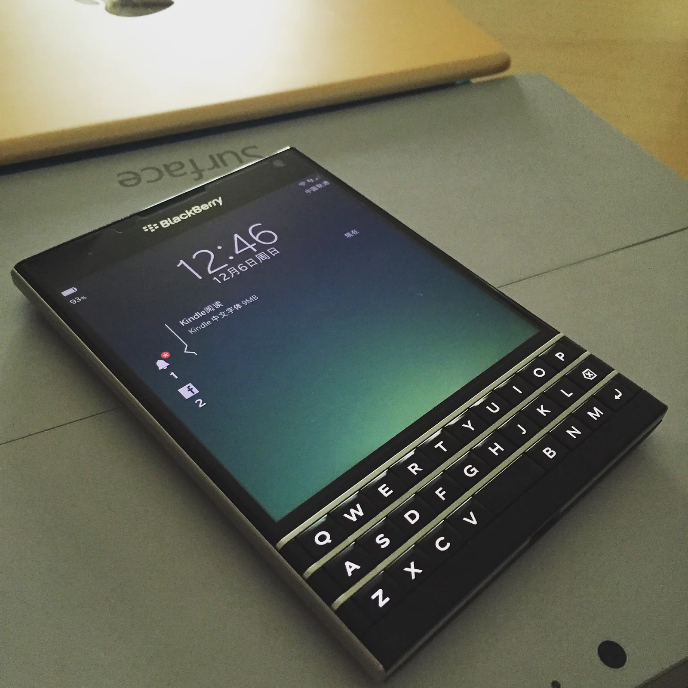

Full Keyboard
全键盘

中文
可能是因为以前用诺基亚全键盘手机养成的习惯。后来，我一直对这种全键盘的设计非常着迷。在那么小的面积里，把英文的 26 个键，再加上其他功能键，全部设计到一起，并且还能调教出很好的触感。这在工业设计上是非常杰出的作品。
作为东方人，我们没有太多机会使用传统的打字机。传统打字机都是英文输入，每敲一下，一个字就直接敲在纸上，没有拼写、再选择字的余地。
这种精密仪器让我沉迷，还因为它不是藏在机器内部的零件，而是直接反映在用户端的——你能看到它，能触摸到它，能和它交互。再加上它的颜色，以及它能和电脑进行的交互，这是一种非常神奇的事情。
我相信每一个男生对这样的键盘都很难抗拒。不然为什么会有这么多人沉迷于机械键盘呢？喜欢它的手感，喜欢它的体积，喜欢它发出的声音。即使只是偶尔用它打字，大部分时间用它玩游戏，很多人还是愿意买一个机械键盘。
我们如今生活在一个全都是由软件在平面上构造出来的交互空间里。我觉得这很可悲。因为对我来说，软件加硬件的结合交互，才一直是最理想、最完美的状态。
需要显示变化的、需要实时让用户看到不同输出的东西，应该用屏幕。而固定的输入方式，并且能够让用户感受到真实敲击反馈的，其实需要用物理硬件的设计。
但现在软件太发达了，所以软硬件都被设计在一个平面上。当然很大的原因是，减少硬件设计可以减少很多成本。
之前还在北京的时候，我家里收藏了非常多这样的全键盘设备。有一台索尼爱立信的手机，滑盖打开之后下面是全键盘，横向使用，全新的，完全没有使用过。
然后还有一段时间，我用图片上这台黑莓 Passport。它的处理器、内存都很差，所以系统会很慢。但这样的方形结构拿在手上真的很美。即使它的物理键盘在底部只占了非常小的面积，按起来其实没有那么舒适，而且它缺少数字键。但没有数字键的好处，就是让这些字母键看起来更加整齐划一。设计师对于美好的东西肯定是有极致追求的。即使因为它太美了，导致没有那么好用，或者缺少一些实用性，设计师也都还是能接受。这中间有非常多的情绪价值补充在里面。
一台非常快的机器，处理器非常快，能让人在使用各种软件的时候很爽，这是情绪价值。但如果处理器比较慢，硬件拿在手上却非常美轮美奂，拿着它的时候就开心，即使不用它也开心，那同样是另外一种情绪价值。
没有说哪种情绪价值就一定更好。不同的人喜欢不同的东西，就像不同的人会喜欢不同的颜色。
我对于键盘或者按键的喜好，可能最早来自于使用索尼的随身听。索尼的随身听，从磁带机到后来的 CD 机、MD，再到后来的 MP3，它对按键的设计就是非常完美。
有的时候索尼甚至要在一个按键上同时兼顾五种以上的功能：摁一下是什么功能，摁两下又是另外一种，摁住不放又是另外一种，摁两下、第二下摁住不放又是另外一种。每一种触击的方式，索尼都考虑得非常非常细致。把玩它的时候，会强烈地感受到这个科技时代能带来的幸福感和满足感。我觉得我还是很爱这个时代的。
因为从小到大，我们见到了各种不同类别的设备在变化。但是即使过时的东西，也仍然有人愿意拿在手上欣赏和把玩。我有一个朋友，他花了全部的积蓄，就为了收藏所有的索尼随身听。所有的版本，所有的颜色，全新的，他都收藏了。即使现在已经不太听磁带了，但偶尔把它拿下来玩一玩，放在手上，可能也会觉得这辈子没什么遗憾了。
我也一直很想找到属于我自己的、愿意花非常多的财产也要去占有它的东西，即使占有之后它其实没什么用。如果这些设备纯粹都是物理硬件，不包含软件，可能我会更喜欢。因为随着软件的迭代升级，几年之后它总会变得没法再使用。但如果一个纯由硬件构成的设备，只要它没有损坏，经过多少年它都可以使用，即使修修补补，它总还是能用。我想我更喜欢这样的设备。
也许这代表着我已经变老了？
English
It probably started with the Nokia phones with full keyboards. I got into the habit, and ever since, I have been fascinated by this kind of full-keyboard design: fitting all 26 letters of the English alphabet, plus the other function keys, into such a tiny area — and still getting the feel right. As industrial design, it is an outstanding piece of work.
As someone from the East, I never had much chance to use a traditional typewriter. Typewriters work in English: each keystroke puts one letter straight onto the paper. There is no spelling things out first and then choosing a character.
What draws me to these precise instruments is also that they are not parts hidden inside the machine. They sit right at the user end: you can see them, touch them, interact with them. Add the colours, and the way they talk to a computer, and it becomes something quite magical.
I believe no man can easily resist a keyboard like this. Why else would so many people be obsessed with mechanical keyboards? They love the feel, the size, the sound it makes. Even if they only type on it occasionally and spend most of the time gaming, many still want to own one.
We now live in a world where interaction is built entirely by software on flat surfaces. I find that sad. For me, the combination of software and hardware has always been the ideal — the most complete state of interaction.
Things that need to show change, things that need to show the user a different output in real time — those belong on a screen. But a fixed way of putting things in, one that lets the user feel a real keystroke in return, needs to be designed in physical hardware.
But software has become so powerful that hardware and software are now designed onto a single flat plane. A large part of the reason, of course, is cost: less hardware design means much lower cost.
When I was still living in Beijing, I kept a large collection of full-keyboard devices at home. One of them was a Sony Ericsson phone: slide it open and there was a full keyboard underneath, used sideways. Brand new, never used at all.
For a while, I also used the BlackBerry Passport in the photograph. Its processor and memory were both poor, so the system was very slow. But the square shape felt genuinely beautiful in the hand. Its physical keyboard took up only a small strip at the bottom, so it was not all that comfortable to type on, and it had no number keys. But the absence of number keys had one advantage: the letter keys looked perfectly neat and uniform. A designer in pursuit of beauty will always chase it to the extreme. Even if the result is a little less usable, a little less practical, because it is so beautiful, the designer can accept that. There is a great deal of emotional value in that trade-off.
A very fast machine, with a very fast processor, feels wonderful when you use all kinds of software. That is emotional value. But if the processor is slow, and the hardware in your hand is beautiful beyond words — just holding it makes you happy, even when you are not using it — that is another kind of emotional value.
Neither kind of emotional value is necessarily better than the other. Different people like different things, just as different people like different colours.
My fondness for keyboards, or for buttons in general, probably began with the Sony Walkman. From the cassette players to the CD players, the MiniDisc players and later the MP3 players, Sony's button design was simply perfect.
Sometimes Sony had to fit five or more functions onto a single button: one press did one thing, two presses another, holding it down a third, two presses with the second one held down a fourth. Sony thought through every way of touching a button, in extraordinary detail. Handling one of those machines, you could feel strongly the happiness and satisfaction this technological age could bring. I think I still love this age very much.
Growing up, we watched all kinds of devices change. But even things that are out of date still have people who want to hold them, admire them, play with them. I have a friend who spent all his savings collecting every Sony Walkman — every version, every colour, all brand new. Even though he hardly listens to cassettes any more, taking one down now and then, just holding it, is probably enough for him to feel he has no regrets in this life.
I have always wanted to find something of my own like that — something I would spend a great deal to own, even if it turned out to be of no real use once I had it. If such a device were purely physical hardware, with no software in it at all, I might like it even more. Software keeps being updated, and after a few years the device stops working. But a device made purely of hardware, as long as it is not broken, will keep working for years. Even patched up and repaired, it still works. I think I prefer devices like that.
Perhaps that means I am getting old?
中文原文
可能是因为以前用诺基亚全键盘手机养成的习惯。后来，我一直对这种全键盘的设计非常着迷。在那么小的面积里，把英文的 26 个键，再加上其他功能键，全部设计到一起，并且还能调教出很好的触感。这在工业设计上是非常杰出的作品。
作为东方人，我们没有太多机会使用传统的打字机。传统打字机都是英文输入，每敲一下，一个字就直接敲在纸上，没有拼写、再选择字的余地。
这种精密仪器让我沉迷，还因为它不是藏在机器内部的零件，而是直接反映在用户端的——你能看到它，能触摸到它，能和它交互。再加上它的颜色，以及它能和电脑进行的交互，这是一种非常神奇的事情。
我相信每一个男生对这样的键盘都很难抗拒。不然为什么会有这么多人沉迷于机械键盘呢？喜欢它的手感，喜欢它的体积，喜欢它发出的声音。即使只是偶尔用它打字，大部分时间用它玩游戏，很多人还是愿意买一个机械键盘。
我们如今生活在一个全都是由软件在平面上构造出来的交互空间里。我觉得这很可悲。因为对我来说，软件加硬件的结合交互，才一直是最理想、最完美的状态。
需要显示变化的、需要实时让用户看到不同输出的东西，应该用屏幕。而固定的输入方式，并且能够让用户感受到真实敲击反馈的，其实需要用物理硬件的设计。
但现在软件太发达了，所以软硬件都被设计在一个平面上。当然很大的原因是，减少硬件设计可以减少很多成本。
之前还在北京的时候，我家里收藏了非常多这样的全键盘设备。有一台索尼爱立信的手机，滑盖打开之后下面是全键盘，横向使用，全新的，完全没有使用过。
然后还有一段时间，我用图片上这台黑莓 Passport。它的处理器、内存都很差，所以系统会很慢。但这样的方形结构拿在手上真的很美。即使它的物理键盘在底部只占了非常小的面积，按起来其实没有那么舒适，而且它缺少数字键。但没有数字键的好处，就是让这些字母键看起来更加整齐划一。设计师对于美好的东西肯定是有极致追求的。即使因为它太美了，导致没有那么好用，或者缺少一些实用性，设计师也都还是能接受。这中间有非常多的情绪价值补充在里面。
一台非常快的机器，处理器非常快，能让人在使用各种软件的时候很爽，这是情绪价值。但如果处理器比较慢，硬件拿在手上却非常美轮美奂，拿着它的时候就开心，即使不用它也开心，那同样是另外一种情绪价值。
没有说哪种情绪价值就一定更好。不同的人喜欢不同的东西，就像不同的人会喜欢不同的颜色。
我对于键盘或者按键的喜好，可能最早来自于使用索尼的随身听。索尼的随身听，从磁带机到后来的 CD 机、MD，再到后来的 MP3，它对按键的设计就是非常完美。
有的时候索尼甚至要在一个按键上同时兼顾五种以上的功能：摁一下是什么功能，摁两下又是另外一种，摁住不放又是另外一种，摁两下、第二下摁住不放又是另外一种。每一种触击的方式，索尼都考虑得非常非常细致。把玩它的时候，会强烈地感受到这个科技时代能带来的幸福感和满足感。我觉得我还是很爱这个时代的。
因为从小到大，我们见到了各种不同类别的设备在变化。但是即使过时的东西，也仍然有人愿意拿在手上欣赏和把玩。我有一个朋友，他花了全部的积蓄，就为了收藏所有的索尼随身听。所有的版本，所有的颜色，全新的，他都收藏了。即使现在已经不太听磁带了，但偶尔把它拿下来玩一玩，放在手上，可能也会觉得这辈子没什么遗憾了。
我也一直很想找到属于我自己的、愿意花非常多的财产也要去占有它的东西，即使占有之后它其实没什么用。如果这些设备纯粹都是物理硬件，不包含软件，可能我会更喜欢。因为随着软件的迭代升级，几年之后它总会变得没法再使用。但如果一个纯由硬件构成的设备，只要它没有损坏，经过多少年它都可以使用，即使修修补补，它总还是能用。我想我更喜欢这样的设备。
也许这代表着我已经变老了？